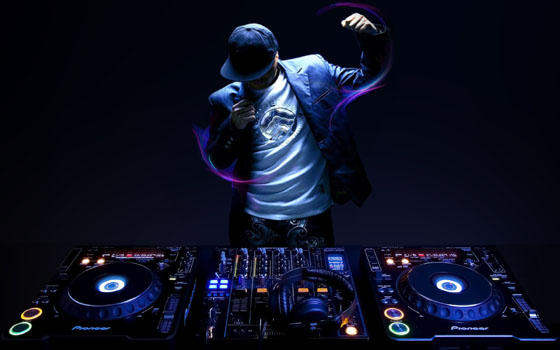

Диджей
это человек, который ставит музыку на вечеринке. Его задача —
создавать правильную атмосферу, чтобы гости не скучали и при необходимости плясали.
Необходимые профессиональные навыки и знания:
знание музыкальных стилей;
знание специализированной аппаратуры;
умение сводить треки;
опыт подбора, нарезки музыки;
инсталляция оборудования и его настройка;
мастеринг;
проведение дискотек, развлекательных программ;
наличие музыкальных данных, творческого воображения.
Личные качества
грамотная и четкая речь;
хорошая дикция;
развитый эстетический вкус;
умение красиво говорить;
умение четко формулировать свои мысли;
хорошее чувство юмора;
наличие музыкального вкуса;
энергичность;
коммуникабельность;
выдержанность.
Место работы
вечеринки,
праздники;
клубы,
дискотеки;
радио.
Плюсы
возможность начать карьеру в любом возрасте (16-17-летние диджеи не редкость);
нет возрастного предела в профессии;
возможность много путешествовать;
много новых знакомств, интересных и полезных;
возможность заниматься любимым, творческим, интересным занятием, переходящим в профессию.
Минусы:
необходимость работать в ночное время;
громкая музыка негативно влияет на слух, сильно устают ноги, дым отрицательно сказывается на органах дыхания;
аппаратуру для работы предпочтительно иметь свою, а хорошая техника стоит дорого.